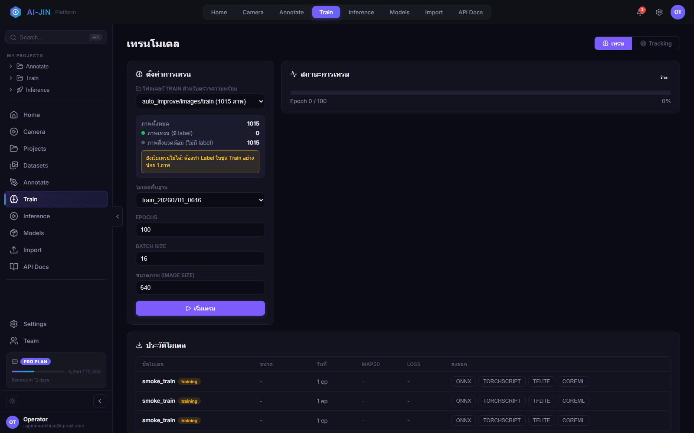
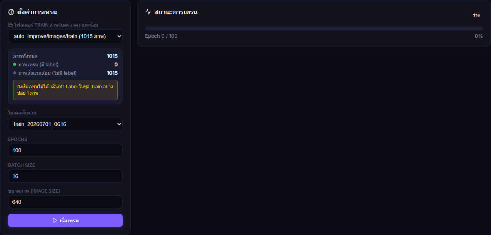
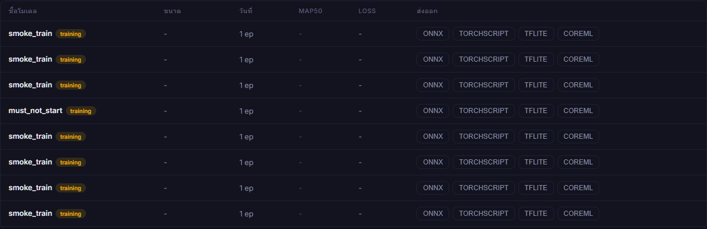

เตรียม dataset ตั้งค่า Ultralytics ติดตามผล Validation และส่งออกโมเดลอย่างตรวจสอบย้อนกลับได้


auto_improve/images/trainFrontend ส่ง data=/dataset/auto_improve/data.yaml เพื่อให้ Ultralytics อ่าน Train, Val และ Test จาก YAML เดียวกัน
| ค่า | แนวทาง | ผลกระทบ |
|---|---|---|
| Model | Nano สำหรับ smoke test; ขนาดใหญ่เมื่อข้อมูล/GPU พร้อม | ความเร็ว, VRAM, ความแม่นยำ |
| Epochs | 1-5 สำหรับทดสอบ pipeline; production ดู convergence | เวลาและ overfitting |
| Batch | เพิ่มจนเหมาะกับ VRAM โดยไม่ OOM | throughput และ memory |
| Image Size | เริ่ม 640; เพิ่มเมื่อวัตถุเล็กและทรัพยากรพอ | รายละเอียดและเวลา |
ระบบตรวจ training service ก่อน หาก service offline จะใช้ local Ultralytics runner และแสดง runner: local หากออนไลน์จะส่งงานไป remote runner

| Format | การใช้งานหลัก |
|---|---|
| ONNX | Runtime ทั่วไปและ workflow ต่อไป TensorRT |
| TorchScript | Deployment ที่ใช้ PyTorch |
| TFLite | อุปกรณ์ edge/mobile ที่รองรับ |
| CoreML | Apple platform |
best.pt, results.csv, data.yaml, split manifest, class mapping, hyperparameters, seed และผู้อนุมัติ
| อาการ | วิธีแก้ |
|---|---|
| Start ถูกปิด / 0 labels | ทำ Label ใน labels/train ให้ชื่อคู่ภาพและมีข้อมูล |
| data.yaml ไม่พบ | สร้างจาก Import และตรวจ mount /dataset |
| CUDA OOM | ลด Batch หรือ Image Size |
| Metric ต่ำ | ตรวจ class, กรอบ, leakage และสมดุล workpiece |